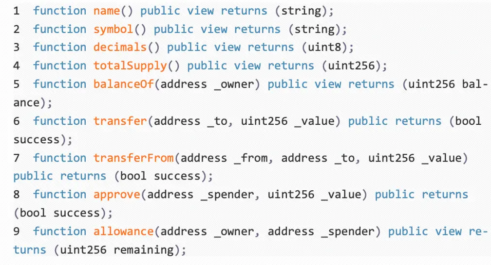

ERC20,721,1155，998协议分析
author：Thomas_Xu
最近在总结归纳代币协议，所以把EIP20,721,1155,998首先拿出来对比分析一下。
首先归纳总结一下这三者的区别：
| 标准 | ERC-20 | ERC-721 | ERC-1155 |
|---|---|---|---|
| 代币类型 | 同质化代币 | 非同质化代币 | 同质化代币、非同质化代币、介于同质化和非同质化代币之间可以互相切换的代币 |
| 特点 | 统一性、可互换、可拆分 | 独特性、不可互换、不可拆分 | 前两者的特点都有，且在一定程度上可以在两者中切换 |
| 生成处理 | 一次性只能生成一种 ERC-20 代币，一次性只能进行单笔单对象交易，并且交易处理需要多次批准 | 一次性只能生成一种 ERC-721 代币，一次性只能进行单笔单对象交易，并且交易处理需要多次批准 | 一次性可以生成多种 ERC-1155 代币资产类别，一次性可以进行多笔多对象交易，交易处理只需要一次批准 |
接下来我们分开分析三者的实现逻辑（这里我们不分析其实现方式）
ERC20
ERC20是一种同质化token, token之间是完全等价的. token就是一个uint256类型的数字.
ERC20也是在目前普及最多的代币协议。
EIP20代币标准
EIP20提案是由Fabian Vogelsteller和Vitalik Buterin在2015年11月创建的代币标准，定义了代币合约的标准接口，提供了转移代币的基本功能，并允许代币获得批准，以方便其他链上的第三方使用。此外，该标准接口允许以太坊上定义的任何代币被其他应用程序（钱包、去中心化交易所等）重用。
功能
ERC20 的功能包括但不限于以下几点：
- 转账：将代币从一个帐户转到另一个帐户
- 查询余额：获取帐户的当前代币余额
- 查询总量：获取网络上可用代币的总供应量
- 代币授权：批准一个帐户中一定的代币金额由第三方帐户使用
函数

当要实现一个满足 ERC-20 接口标准的 Token 智能合约时，该合约必须满足以上内容实现。
name
返回当前 Token 的名称，比如：DSToken，可选项。
1 | function name() constant returns (string name) |
在智能合约中定义，可通过构造方法传值进行初始化，也可直接在代码中指定：
1 | string public name; |
symbol
symbol 就是通常使用的简称，比如：EOS，可选项。
1 | function symbol() constant returns (string symbol) |
与 name 一样，可通过构造方法传值进行初始化，也可直接在代码中指定：
1 | string public symbol; |
decimals
当前代币支持的最小精度，也就是小数点后多少位，比如此值为 2，表示 1 个 Token 可分割为 100 份。对应以太坊来说，ETH 的此值为 18，也就是说一个 ETH 可以分割为小数点后 18 位的精度。一般情况下，当查询一个 Token 余额时，是按照最小精度的整型来显示的。比如 decimals 为 2，发行一个代币，那么查询到的结果为 100，此值为可选项。
1 | function decimals() constant returns (uint8 decimals) |
与 name 和 symbol 一样，可通过构造方法传值进行初始化，也可直接在代码中指定：
1 | uint8 public decimals; |
totalSupply
Token 的发型总量，此处需注意这个数量的单位与 decimals 中指定的最小单位一致，注意它们之间的换算
1 | function totalSupply() constant returns (uint256 totalSupply) |
balanceOf
返回地址为_owner的账户的代币余额。返回余额以最小单位计算。
1 | function balanceOf(address _owner) constant returns (uint256 balance) |
此账户余额对应智能合约代码中余额的存储，所有的地址与余额之间的关联都是通过此 mapping 进行存储：
1 | mapping (address => uint256) public balanceOf; |
transfer
代币转账操作，从执行转账的地址转出指定数量的代币到目标地址，并且必须触发 Transfer 事件。如果执行转账地址没有足够的余额则抛出异常，支持转账金额为 0。
1 | function transfer(address to, uint256 value) public returns (bool); |
transferFrom
从_from地址发送数量为_value的 token 到_to地址，必须触发 Transfer 事件，主要应用场景为智能合约中对操作账户进行授权，然后达到某个条件时，操作账户可以对被操作账户进行转账操作。如果无权操作则需抛出异常，与 tranfer 相同，可以进行 0 值操作。
1 | function transferFrom(address _from, address _to, uint256 _value) returns (bool success) |
approve
设置_spender地址可以从操作此方法的地址那里获得的最高金额，此方法可以多次调用。注意：为了阻止向量攻击，客户端需要确认以这样的方式创建用户接口，即将它们设置为 0，然后将其设置为同一个花费者的另一个值。虽然合同本身不应该强制执行，允许向后兼容以前部署的合同兼容性。
1 | function approve(address _spender, uint256 _value) returns (bool success) |
allowance
1 | function allowance(address _owner, address _spender) constant returns (uint256 remaining) |
ERC721
和ERC20一样，ERC721同样是一个代币标准，ERC721官方简要解释是Non-Fungible Tokens，简写为NFTs，多翻译为非同质代币。
功能
和ERC20差不太多,ERC721 的功能包括但不限于以下几点：
- 转账：将代币从一个帐户转到另一个帐户
- 查询余额：获取帐户的当前代币余额
- 查询总量：获取网络上可用代币的总供应量
- 代币授权：批准一个帐户中一定的代币金额由第三方帐户使用
函数
ERC721最为一个合约标准，提供了在实现ERC721代币时必须要遵守的协议，要求每个ERC721标准合约需要实现ERC721及ERC165接口，接口定义如下：
1 | pragma solidity ^0.4.20; |
name
该函数应当返回通证的名称。
1 | function name() constant returns(string name){ |
Symbol
该函数应当返回通证的符号，它有助于提高与ERC20的兼容性。
1 | function symbol() external view returns (string _symbol); |
totalSupply
该函数应当返回区块链上供应的通证总数量，该数量不一定是固定不变的。
1 | contract MyNFT { |
balanceOf
返回由_owner 持有的NFTs的数量。
1 | function balanceOf(address _owner) external view returns (uint256); |
ownerOf
返回tokenId代币持有者的地址。
1 | function ownerOf(uint256 _tokenId) external view returns (address); |
approve
该函数用来授权给另一主体代表持有人进行通证转移操作。
1 | function approve(address _to, uint256 _tokenId); |
safeTransferFrom
1 | function safeTransferFrom(address _from, address _to, uint256 _tokenId, bytes data) external payable; |
安全地转移NFT所有权并发送数据，即将tokenId为参数_tokenId的NFT的所有权由地址_from转移给地址_to，并将额外的数据data发送给地址_to，并触发Transfer事件。参数data没有格式要求。若地址_to是合约地址，data一般包含函数签名值以及函数参数值，当data发送给_to时，会调用合约_to中签名值对应的函数或者回调函数。
函数能够执行，必需满足以下条件：
- 参数from是
tokenId对应的NFT的所有者 - 调用者sender有权转移_
tokenId对应NFT的所有权，即：msg.sender是tokenId对应NFT的所有者或者得到了其授权。 - 参数_to不是零地址
另外，该函数使用了payable修饰符，因此可以接收以太坊原生代币（以太币）。
safeTransferFrom
1 | function safeTransferFrom(address _from, address _to, uint256 _tokenId) external payable; |
安全地转移NFT所有权，即将tokenId为参数_tokenId的NFT的所有权由地址_from转移给地址_to，并触发Transfer事件。
调用该函数等价于调用上面的safeTransferFrom中data参数是””的情况，即：
1 | safeTransferFrom(_from, _to, _tokenId, "") |
transferFrom
1 | function transferFrom(address _from, address _to, uint256 _tokenId) external payable; |
转移NFT所有权，即将tokenId为参数_tokenId的NFT的所有权由地址_from转移给地址_to，并触发Transfer事件。
approve
1 | function approve(address _approved, uint256 _tokenId) external payable; |
将tokenId为参数_tokenId的NFT授权给地址_approved，或者更新授权地址为_approved，并且触发Approve事件。
函数能够执行，必需满足以下条件：
- 调用者sender有权转移_tokenId对应NFT的所有权，即：msg.sender是_tokenId对应NFT的所有者或者得到了其授权。
ERC1155
根据ERC1155的官方文档)的介绍，ERC1155是用于多种代币管理的合约标准接口。 单个部署的合约可以包括同质化代币、非同质化代币或其他配置（如半同质化代币）的任何组合。
多代币标准
多代币标准的的目的很单纯，就是创建一个智能合约接口，可以代表和控制任何数量的同质化和非同质化代币类型。 这样一来，ERC-1155 代币就具有与 ERC-20 和 ERC-721 代币相同的功能，甚至可以同时使用这两者的功能。 而最重要的是，它能改善这两种标准的功能，使其更有效率，并纠正 ERC-20 和 ERC-721标准上明显的实施错误。
EIP-1155 中对 ERC-1155 代币进行了全面的描述。
EIP1155代币标准
BIP1155提案概述了一个标准的智能合约接口，可以代表任意数量的同质化代币和非同质化代币类型。ERC20等现有标准要求为每种代币类型部署单独的合约。ERC721标准的代币ID是一个单一的非同质化索引，每组非同质化代币都会被部署为具有统一设置的独立的合约。相比之下，ERC1155多代币标准允许每个代币ID表示一个新的可配置代币类型，它可以有自己的元数据、供应量以及其他属性。
每个函数的参数集合中都会包含_id参数，表示交易中的一种特定的代币或代币类型。
ERC-1155 的功能和特点
批量传输
通过一次合约调用传输多种资产。
1 | // ERC-20 |
批量传输和ERC20的传输非常相似。唯一的区别就是我们将数值作为数组传递。同时传递了数组id。
举个例子：我们给出ids=[3, 6, 13] 和 values=[100, 200, 5]，传输结果将是：
- 将 id 3 的 100 个代币从
_from传输到_to。 - 将 id 6 的 200 个代币从
_from传输到_to。 - 将 id 13 的 5 个代币从
_from转移到_to。
值得注意的是在ERC-1155中，我们只有transferFrom而没有transfer。
批量余额
我们也用ERC20版本的余额查询作为对比：
1 | // ERC-20 |
其实可以发现，在ERC1155版本中查询余额会更加方便，我们可以在单次调用中获取多个余额。参数中传递所有者账户数组和代币id数组。
举个例子，对于给出的 _ids=[3, 6, 13] 和 _owners=[0xbeef..., 0x1337..., 0x1111...]，返回值将为：
1 | [ |
批量审批
ERC1155的授权过程与ERC20有所不同，这里不是批准特定的金额，而是通过setApprovalForall函数设置操作账户为已批准或未批准（传参：批准为true，不批准为false）
查看当前的审批状态可以通过 isApprovedForall 完成。 如您所见，要么全部批准，要么不批准。 不能定义要批准代币的数量，甚至代币类型。
这是考虑到简洁性而故意设计的。 您只能批准一个地址的所有代币。
1 | // ERC-1155 |
回调函数
1 | function onERC1155BatchReceived( |
基于 EIP-165 的协议支持，ERC-1155 只支持智能合约的接收回调函数。回调函数必须返回一个事先预定义的 4 字节值，这个值被指定为：
1 | bytes4(keccak256("onERC1155BatchReceived(address,address,uint256[],uint256[],bytes)")) |
当接收合约返回这一值时，意味着合约知道如何处理 ERC-1155 代币并接受转账。
ERC998
ERC-998名叫可拆解非同质化代币（Composable NFT，缩写为CNFT）。它的设计可以让任何一个NFT可以拥有其他NFT或FT。转移CNFT时，就是转移CNFT所拥有的整个层级结构和所属关系。简单来说就是一个ERC-998的物品可以包含多个ERC-721和ERC-20形式的物品。
举个简单的例子，可以帮助我们更快的理解ERC998到底有什么用。
比如说你想在区块链游戏当中拥有一个角色，那么这个角色本身就是一个基于ERC721的NFT。当你达到一定等级时，一定想要给角色买一些装备，例如衣服等等。但是每一样装备都是一个NFT的话，其实在角色和装备之间，是没有联系的，都是作为单独的NFT存在。
但是在ERC998出现以后，我们可以把角色看为父token，装备等等都是子token，这样一来，二者便变得不可分割，在交易角色的同时，装备等等也会同时被交易。
我认为，ERC998除了在游戏当中的应用，还可以应用在历史版本迭代等问题上，总之，ERC998的可应用性，还是非常强的。
简单总结
ERC-721标准的扩展，使ERC721代币能够拥有其他ERC721代币和ERC20代币。
ERC-20和ERC-223标准的扩展，使ERC20和ERC223代币由ERC721代币拥有。
此规范涵盖四种不同类型的可组合令牌：
- ERC998ERC721 自上而下的可组合代币是一种 ERC721 代币，具有用于拥有其他 ERC721 代币的附加功能。
- ERC998ERC20 自上而下的可组合代币是一种 ERC721 代币，具有拥有 ERC20 代币的附加功能。
- ERC998ERC721自下而上可组合的代币是一种ERC721代币，具有由ERC721代币拥有的附加功能。
- ERC998ERC20自下而上可组合的ERC20代币具有ERC721代币拥有的附加功能。
开发时如何选择这四种类型的可组合令牌呢？
如果您想将常规 ERC721 代币转移到不可替代代币，请使用自上而下的可组合代币。
如果您想将不可替代的代币转移到常规的ERC721代币，请使用自下而上的可组合代币。
ERC-998的结构中包含两种映射关系，父tokenID映射到子token合约地址。当子token是NFT/FT时，子合约地址映射到对应的子tokenID/余额。 也就是说对于子ERC-721 token，ERC-998会追踪tokenID，而对于ERC-20 token，ERC-998会追踪token数量。 这种内部记账将有助于确保不拥有父token的人无法转移子token。

true

...
...
This is copyright.